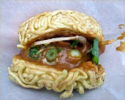

Ramen Recipe for The Dark Confines of Your Dorm

Desription
Ah, behold the magnificent sight of terribly cooked ramen! Picture this: a sad, limp tangle of noodles, desperately clinging to each other for support as if their culinary life depended on it. The broth, oh the broth, a murky concoction that would make even the bravest souls question their life choices. Its flavor? Well, let's just say it's an intriguing blend of blandness and disappointment.
Ingredients
- 2 packs of ramen
- 1 tablespoon of chilli flakes
- 4 cups of chicken or vegetable broth
- 1 tablespoon of chicken herb blend
- 1 teaspoon of Jamacian Chicken Curry blend
Steps
- In a large pot, bring the chicken or vegetable broth to a boil.
- Add chilli flakes, Jamacian Chicken Curry Blend and chicken herb blend.
- Add both ramen packs.
- Monitor and keep on fire until desired firmness/softenss is achieved
- Drain water until desired broth level is achieved
- Add powder ramen flavor packs. PSA : "Oil packs are made by the devil."